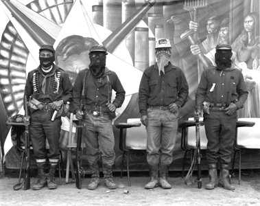

As Sete Mensagens Zapatistas
--------------------------------------------------------------------------------
As sete mensagens zapatistas com as quais o comandante Tacho entregou
a Marcos o bastão de comando no aniversário do EZLN.
Bandeira Nacional: Neste pedaço de tecido se encontra a
palavra de todos mexicanos pobres e sua luta desde os velhos tempos. Tens
de lutar por todoseles, nunca por ti, nunca por nós. Para todos,
tudo, nada para nós. Somos mexicanos que queremos ser livres.Esta
é a bandeira da história.Recorda sempre que nossa luta é
pela liberdade.
Bandeira do EZLN: Esta estrela de cinco pontas contém a
figura do ser humano: a cabeça, as duas mãos os dois pés
e o coração vermelho, que une as cinco partes tornando-as
uma só. Somos seres humanos e isso quer dizer que temos dignidade.
Esta é a bandeira da dignidade. Recorda sempre que nossa luta é
pelo homem.
Arma: Nesta arma va i nosso coração guerreiro. Nossa
dignidade é que nos obriga a tomar as armas para que ninguém
tenha de tomá-las nunca mais. Somos soldados que querem deixar de
ser soldados. Esta é a arma da paz. Recorda sempre que nossa luta
é pela paz.
Bala: Nesta bala vai nossa fúria. Nosso desejo de
justiça é que move esta bala para que ela fale o que nossas
palavras calam. Somos vozes de fogo que querem alívio. Esta é
a bala da justiça. Recorda sempre que nossa luta é pela justiça.
Sangue: Neste sangue vai nosso sangue indígena. O orgulho
que herdamos dos nossos antepassados, que se transforma em sangue, é
o que nos torna irmãos. Somos sangue que rega o solo e acalma a
sede de todos os nossos irmãos. Este é o sangue dos homens
e mulheres verdadeiros. Recorda sempre que nossa luta é pela verdade.
Milho: Neste milho está a carne de nosso povo. Somos homens
e mulheres de milho,filhos e filhas dos deuses primeiros, dos criadores
do mundo. Somos milho que alimenta a história, que ensina que é
preciso mandar obedecendo. Este é o milho que, doendo, alivia a
dor de todos os nossos irmãos. Recorda sempre que nossa luta é
pela democracia.
Sangue: Neste sangue vai nosso sangue indígena. O orgulho
que herdamos dos nossos antepassados, que se transforma em sangue, é
o que nos torna irmãos. Somos sangue que rega o solo e acalma a
sede de todos os nossos irmãos. Este é o sangue dos homens
e mulheres verdadeiros. Recorda sempre que nossa luta é pela verdade.
Milho: Neste milho está a carne de nosso povo. Somos homens
e mulheres de milho,filhos e filhas dos deuses primeiros, dos criadores
do mundo. Somos milho que alimenta a história, que ensina que é
preciso mandar obedecendo. Este é o milho que, doendo, alivia a
dor de todos os nossos irmãos. Recorda sempre que nossa luta é
pela democracia.
Terra: Nesta terra está a casa dos nossos mortos mais importantes.
Somos os mortos de sempre, que temos de morrer para viver. Somos a morte
que vive. Esta é a morte que dá vida a todos nossos irmãos.
Recorda sempre que nossa luta é pela vida.
Sete forças: tzotzil, tzetal, tojolabal, chol, mam, zoque
e mestizo*. Que a luta cresça sete vezes sete. Sete palavras e sete
caminhos: vida, verdade, fome, paz, democracia, liberdade e justiça.
Sete caminhos que dão força ao bastão de comando de
chefes dos homens e mulheres verdadeiros. Recebe, assim, o bastão
de comando das sete forças. Leva-o com honra e que nele não
andem as palavras que os homens e mulheres verdadeiros não dizem.
Não és mais tu, agora e sempre és nós.
* Etnias indígenas que compões o EZLN. (N. da E.)
BRASIL OUTROS 500 -> ANARCHY THE ONLY CHOICE
HATTED CORP